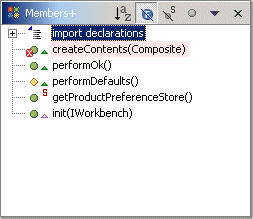

Members+ ViewThe Members+ view is just like the standard Java Browsing Members view except that it has been enhanced with COLOR.  By default, members with errors are shown with a light red background. Options are provided via a preference page to set various foreground and background colors. |